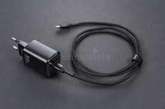

At NexuCore Innovations, we're redefining the way you power your devices. Our flagship product, the VoltEdge™ HyperCharge Station, uses next-gen GaN (Gallium Nitride) technology to deliver ultra-fast, intelligent charging in a compact design. With smart adaptive current control, it automatically detects your device’s power needs — from smartphones to laptops — and adjusts output to ensure safe, efficient charging. Built with triple-layer surge protection and heat-resistant components, VoltEdge™ charges 3x faster than standard chargers while keeping your battery life safe. Say goodbye to bulky bricks and slow charges — with VoltEdge™, power meets precision.

⚡ Introducing the HyperVolt Pro Charger From VoltEdge Technologies Say goodbye to slow charging and bulky bricks. The HyperVolt Pro by VoltEdge Technologies is the future of fast, safe, and intelligent charging. Built with Smart IC technology and Gallium Nitride (GaN) innovation, it delivers ultra-fast power in a compact, pocket-friendly design. 🔧 Key Features: ⚡ 65W Fast Charging – Full phone charge in under 30 minutes 🔥 Overheat & Surge Protection – Built for safety and reliability 🌎 Universal Compatibility – Works with laptops, tablets, phones & more 🛫 Travel-Ready Design – Small, foldable, and international voltage support 💡 Why Choose HyperVolt Pro? HyperVolt Pro detects your device’s optimal voltage, delivering just the right power while keeping everything cool and secure. Whether you’re a student, traveler, or tech lover, this charger fits your lifestyle and keeps you going without interruptions.